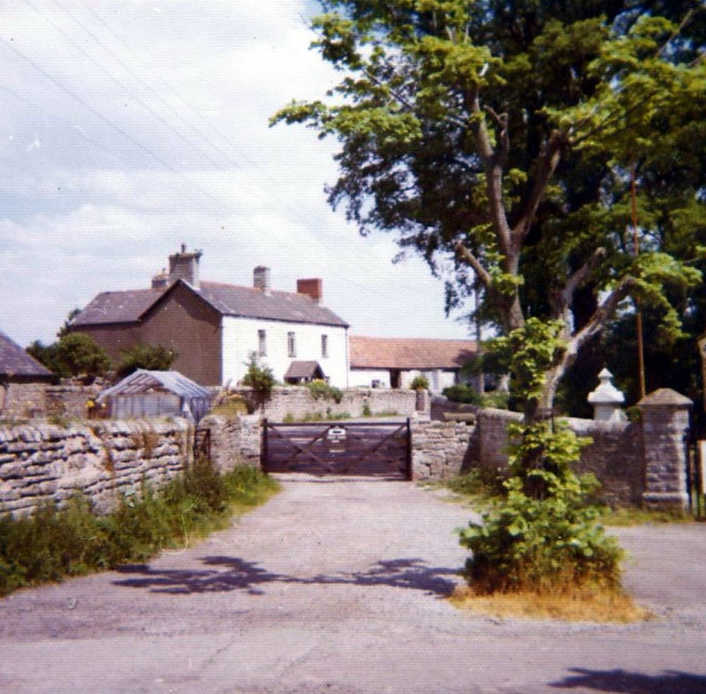

29 April 1988: the first attempt to evict
On Friday 29 April 1988 bailiffs, with police present, came to Great House Farm to take possession for BP Properties Ltd, which had won its possession case in the High Court in 1986 and in the Court of Appeal in 1987. The family were not removed that day. The press record of the day and its aftermath follows.
29 April 1988 — South Wales Echo: the background to the dispute
- Record:
EV-0088 (Legal Wiki, Evidence Register)
“… been waged for two generations of the Buckler family …”
What the record shows. On the day of the first attempt to evict the family, the South Wales Echo printed background to a dispute it described as running for two generations, including an arrangement of 1974 under which Mrs Buckler stayed in the farmhouse.
What it does not show. Only a search-result snippet survives, not the full article. The paper’s description of earlier cases is its own and has not been checked against the court files.
c. 30 April 1988 — “Chainsaw farmer vows to fight on”
- Record:
EV-0089 (Legal Wiki, Evidence Register)
“Then they started smashing the doors with poleaxes. My children were right behind the door when the axe came through. That’s when I started my chainsaw and pushed it through the door. They backed off then.”
What the record shows. A press cutting by Andrew Penman reported the first attempt to evict the family from Great House Farm. It printed William (Billy) Buckler’s own words about the gate lock being broken, the doors being struck with axes while his children stood behind them, and his use of a chainsaw through the door, after which the men withdrew.
What it does not show. The newspaper title and exact date are not printed on the cutting. The report gives Mr Buckler’s words as he gave them to the reporter; it does not identify the men at the door or decide whether anyone acted unlawfully.
30 April 1988 — A dozen police officers on the farm
- Record:
EV-0090 (Legal Wiki, Evidence Register)
“A dozen police officers were on the farm as the bailiffs tried to evict the Buckler family”
What the record shows. The South Wales Echo reported that a dozen police officers were on the farm as bailiffs tried to evict the Buckler family, and that Mr Buckler would not leave the farm for medical attention because he feared the bailiffs would return.
What it does not show. A search-result snippet only. Another cutting gives the number of officers as about fifteen.
c. April 1988 — Photograph: “Police wait outside the farmhouse”
- Record:
EV-0086 (Legal Wiki, Evidence Register)
“Police wait outside the farmhouse”
What the record shows. A newspaper photograph with this caption shows police vehicles and officers outside Great House Farm during the confrontation of April 1988.
What it does not show. The caption does not identify the officers, their orders or their role, and the newspaper’s title and date are not printed with it.
12 May 1988 — The local MP writes to the Lord Chancellor
- Record:
EV-0092 (Legal Wiki, Evidence Register)
“CARDIFF MP Alun Michael has asked the Lord Chancellor to look at the case of defiant farmer Bill Buckler …”
What the record shows. The South Wales Echo reported that the Cardiff MP Alun Michael had asked the Lord Chancellor to look at the case of the farmer who had held off bailiffs with a chainsaw.
What it does not show. A short machine-read snippet. Any reply from the Lord Chancellor’s Department is not in the record.


The gate and the farmhouse behind it, from the farm’s own album (Part 1, no. 096). Source: Wayback Vault, album image.